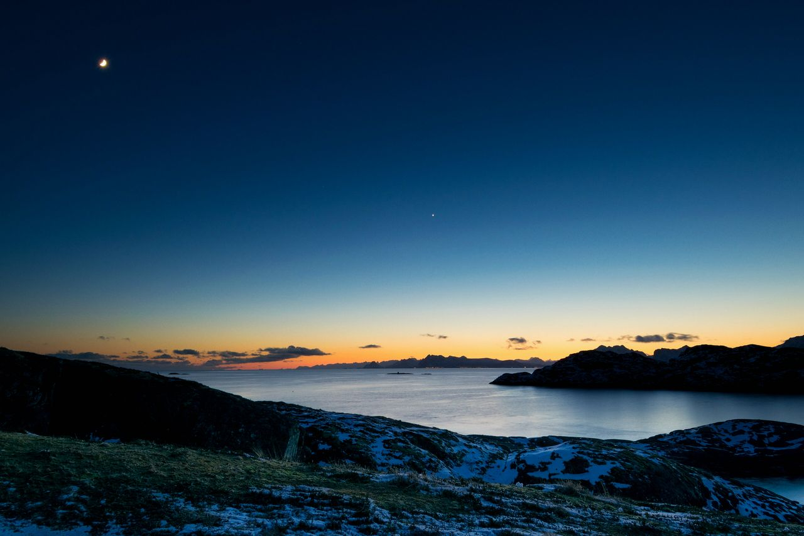
Long light
One sky, all day
Real photographs (CC0), graded to one palette. The fjord is the interactive hero; its sunrise, morning and night states are baked from the same shader for no-JS and for social cards. The boulevard, the marine layer and the palms carry the warm half of the day.
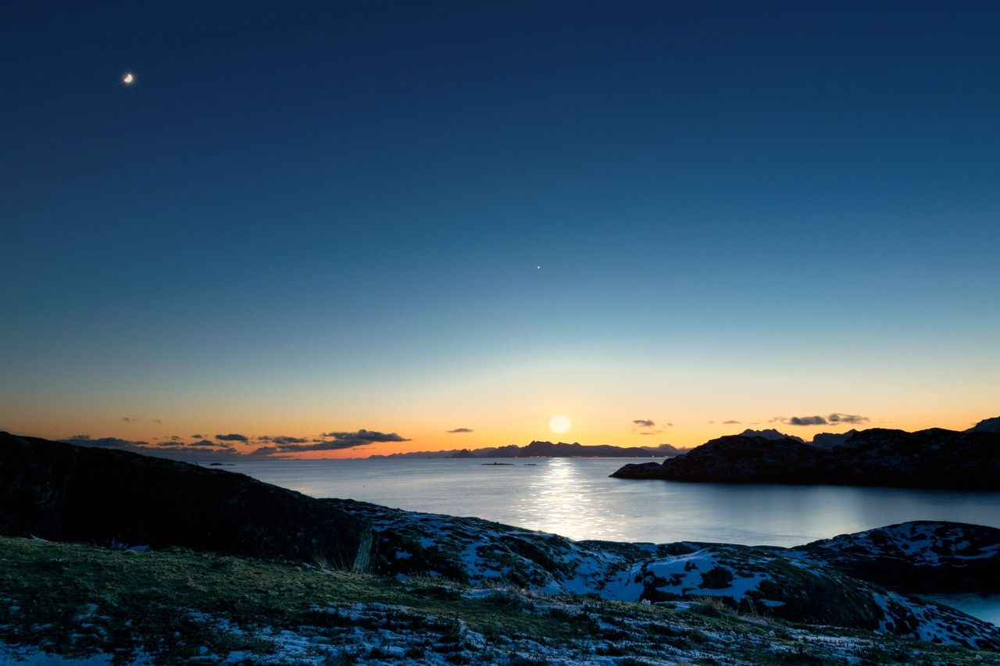
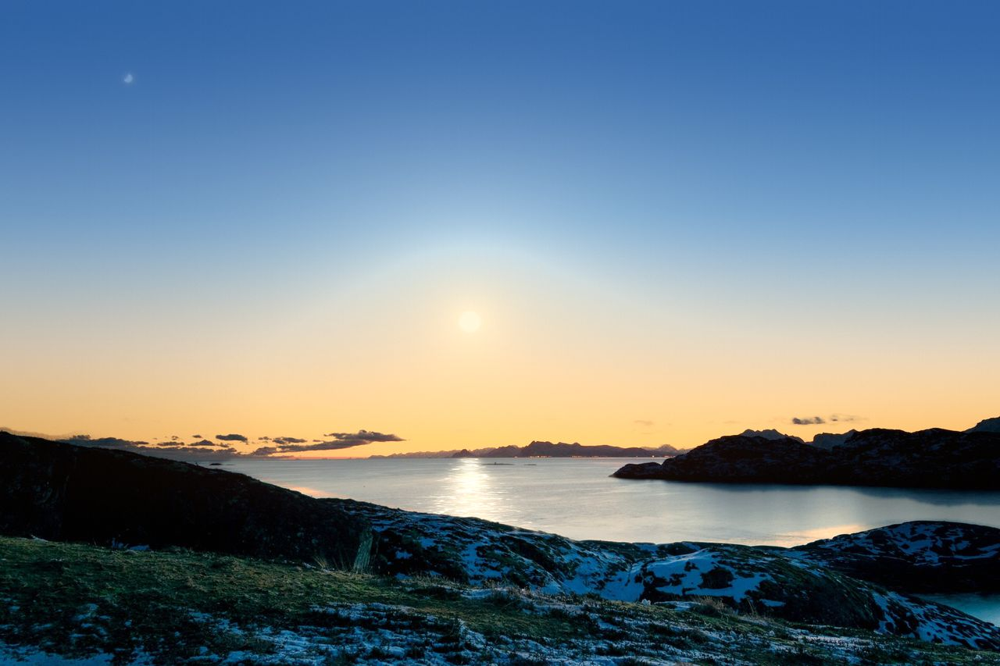
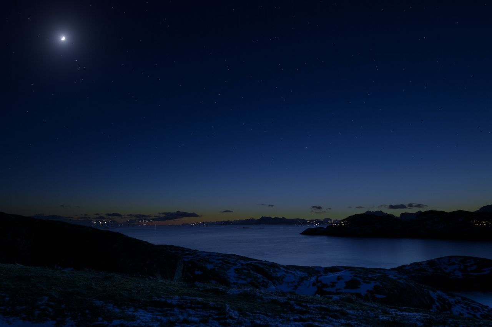
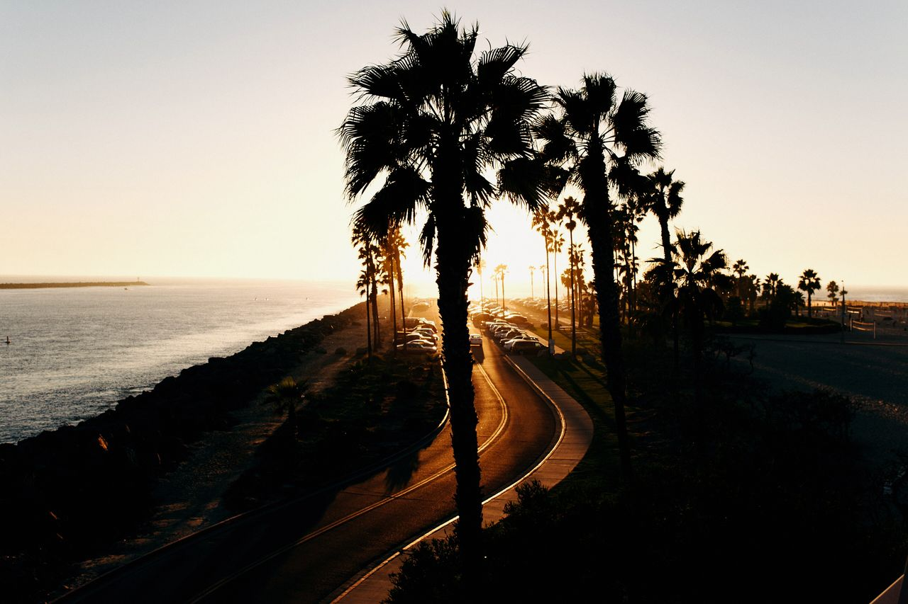
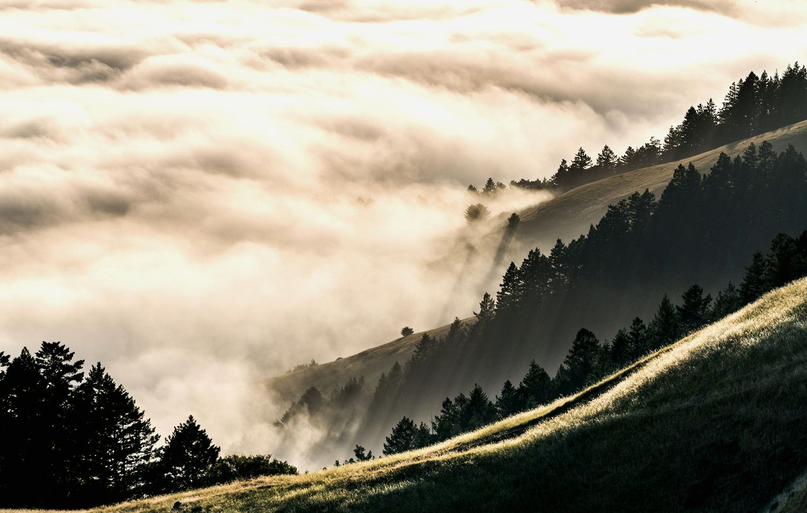
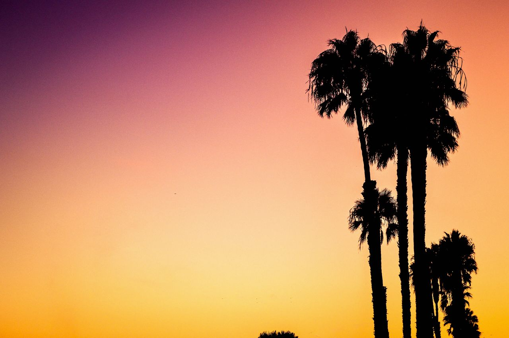
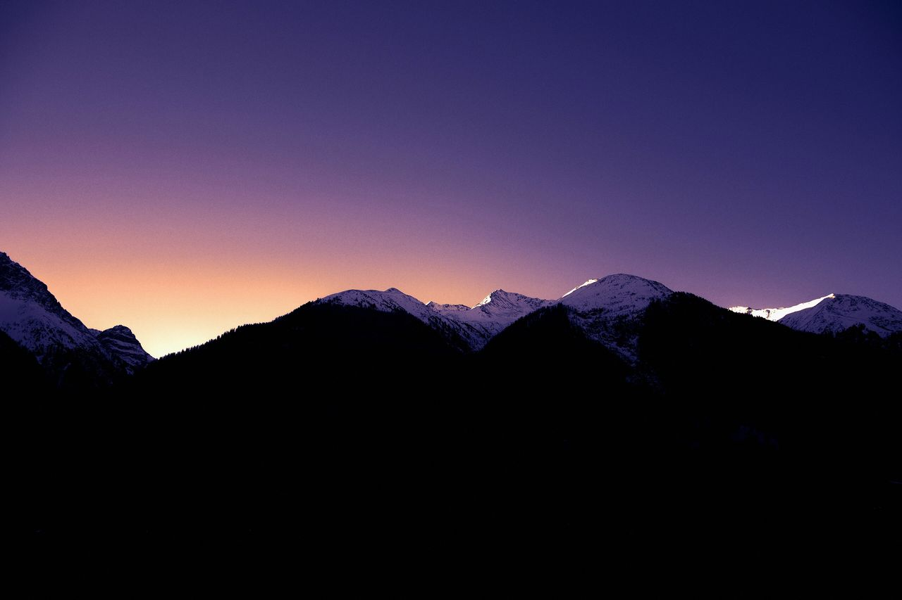
Sand, poppy, sage, sky
A California day palette, with a Norwegian night underneath it. The theme switch swaps sand for night and poppy for lamp-light.
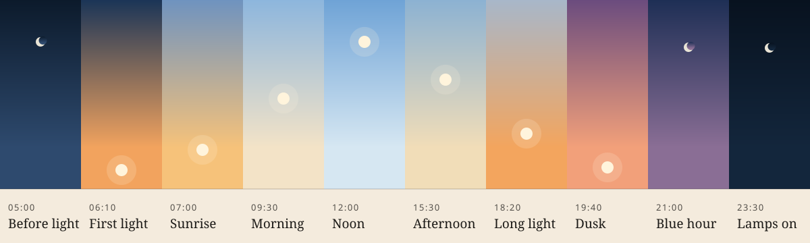
Instrument Serif: a condensed, high-contrast display serif; regular and italic. Headlines, product names, numbers that matter.
Schibsted Grotesk: a clean grotesk drawn for a Norwegian newsroom; variable 400 to 900. Body, labels, UI.
An A on the horizon
The serif A stands in a sun; its crossbar continues as the horizon, gold above and fjord-blue below: cold blue turning gold, in one glyph.
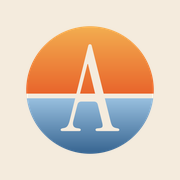
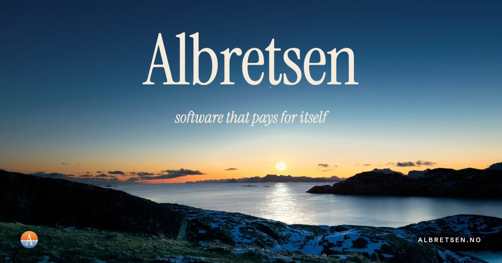
Four walls, four hours
Each live product's real icon is set as a glazed plaque on a stucco wall, at its own hour: the light, the plaster relief and the palm shadow all agree on where the sun is. Retired products are sun-faded tiles.
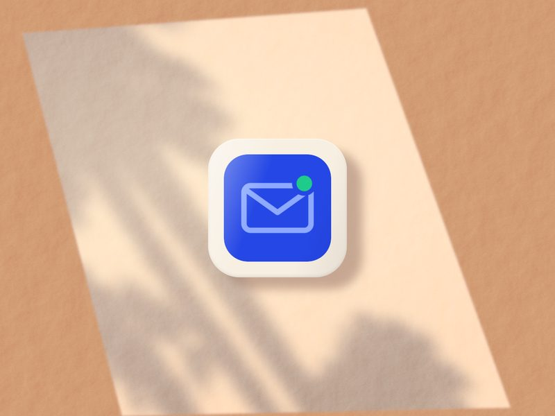
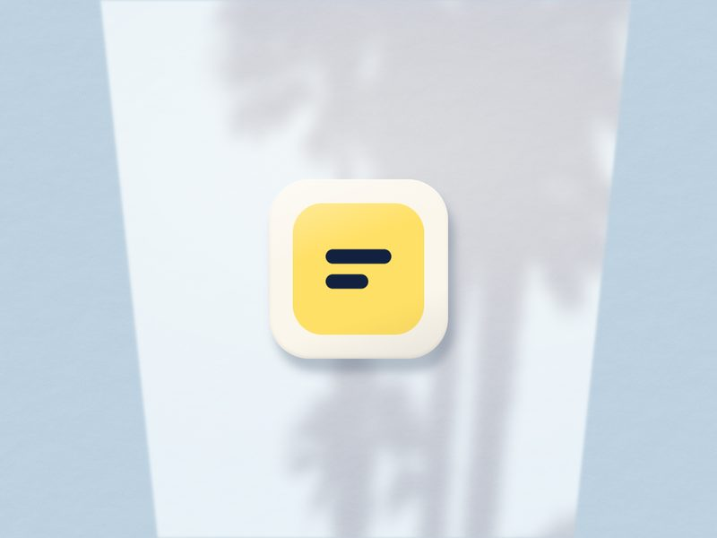
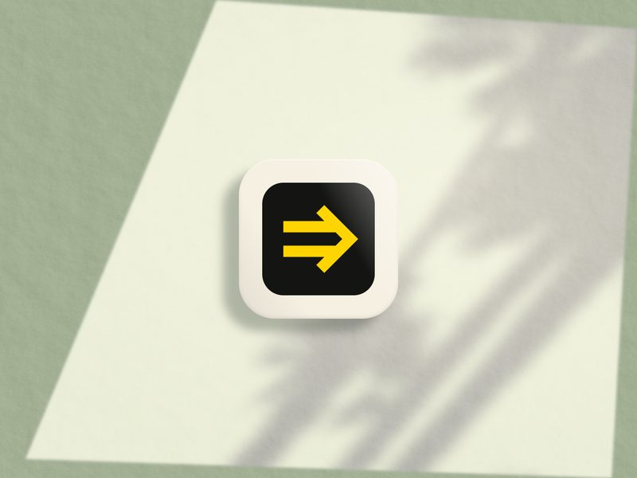
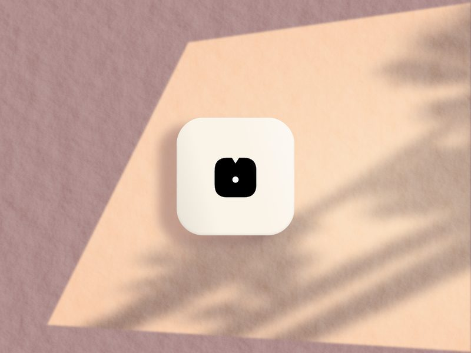
Texture and shade

A day passes as you scroll
The ribbon at the very top of this page is Daylong: scroll and the whole day runs through it.
Daylong
Registered colour properties on a scroll() timeline: the sky runs from first light to blue hour as the page scrolls.
Horizon rise
Lines rise from behind a hairline horizon, staggered, with an ease-out-expo.
Sunset switch
The sun sinks under the horizon, the moon rises; the new theme spreads from the button in a circle.
Glint
A slow band of sun crosses a word once every few seconds; for one number per page, at most.